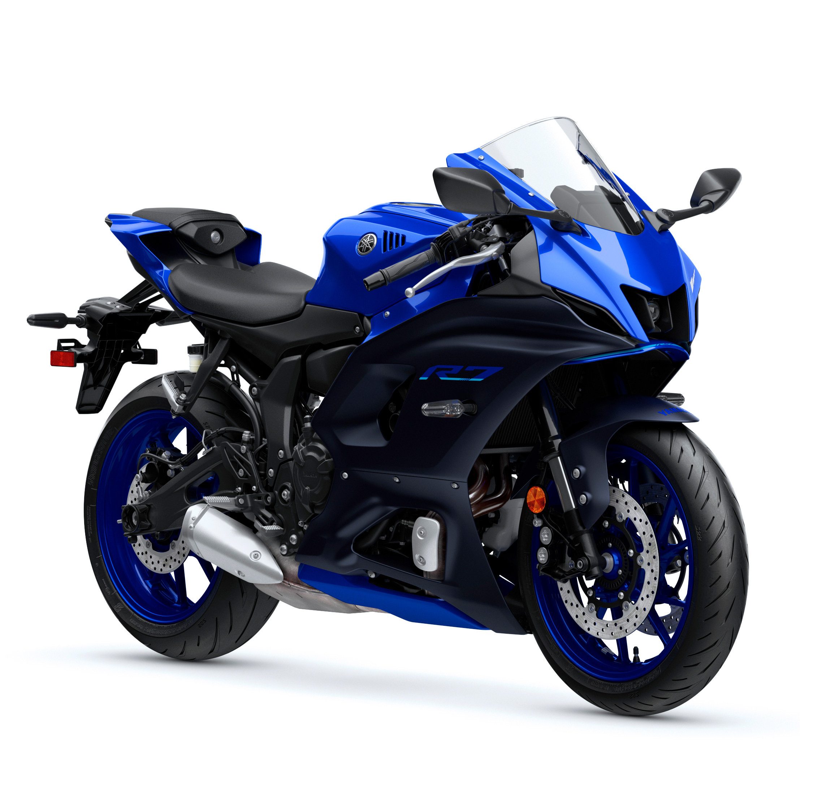

Yamaha Motor Company, fundada en 1955 tras la experiencia de la marca en instrumentos musicales, es un referente mundial en motociclismo, destacando por su innovación tecnológica, fiabilidad y diseño deportivo.

Suzuki es una marca japonesa legendaria con más de 100 años de historia, reconocida mundialmente por producir motocicletas fiables, de alto rendimiento y tecnología innovadora desde sus inicios en 1952 con la "Power Free".

Motos Yamaha
El video presenta una selección de las siete motocicletas Yamaha de baja cilindrada que destacan por su relación costo-beneficio, analizando características como potencia, diseño, consumo de combustible y utilidad para el uso diario.
Motos susuki
A lo largo del contenido se explican aspectos como el diseño, la potencia del motor, el rendimiento y las ventajas que ofrecen estas motos marca susuki para diferentes tipos de uso, ya sea en ciudad o en carretera.
Las motocicletas Bajaj Pulsar son reconocidas en Latinoamérica como una de las líneas más populares y fiables en el segmento naked-sport de baja y media cilindrada. Destacan por su excelente relación calidad-precio, diseño deportivo, y motores con tecnología DTS-i (doble o triple bujía) que ofrecen un gran equilibrio entre rendimiento, eficiencia de combustible y potencia para uso urbano y vial